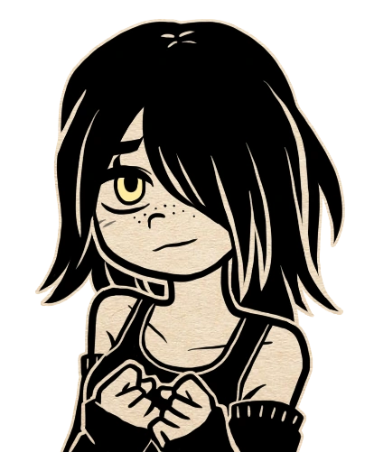

Действующие Лица Трагедии
Каждый персонаж в новелле искалечен психологическими травмами, подозрениями и тайнами. Выберите героя, чтобы изучить его досье.

Эндрю Грейвс (Энди)
Усталый студент, терзаемый виной и депрессией. Несмотря на внешнее стремление к морали, его психика сломлена годами манипуляций сестры, из-за чего он готов переступить черту человечности.

Эшли Грейвс (Лейли)
Опасная, харизматичная и непредсказуемая социопатка. Её мир замкнут исключительно на обладании Эндрю. Не испытывает жалости к чужим жизням и с лёгкостью использует оккультизм и насилие.

Джулия
Рассудительная студентка из нормального общества, в прошлом дружившая с Эндрю. Символизирует мост в адекватную реальность, который Эшли всеми силами стремится сжечь.

Рене
Таинственный знакомый детства, чья судьба тесно переплетена с началом морального падения брата и сестры Грейвс и их скрытыми воспоминаниями.
Второстепенные Фигуры и Семья
Родители Грейвс
Холодная, эмоционально отстранённая мать и строгий отец. Их токсичное воспитание и пренебрежение стали корнем тяжёлых психических нарушений у Эндрю и Эшли.
Странный Сосед-Культист
Жилец дома из Эпизода 1, проводивший втайне оккультные ритуалы. Стал катализатором первого рокового преступления голодающих брата и сестры.
Демоническая Сущность
Потусторонняя сила, вызванная оккультным обрядом. Проникает в сны и видения героев, подпитываясь их чувством вины, ненавистью и похотью.
Сравнительный Анализ
| Персонаж | Возраст | Тип личности | Главная слабость | Статус в новелле |
|---|---|---|---|---|
| Эндрю (Энди) | ~20-21 лет | Меланхолик, созависимый соучастник | Синдром вины, неспособность сказать «нет» Эшли | Протагонист |
| Эшли (Лейли) | ~19 лет | Социопатка, яндере, манипулятор | Патологический страх остаться в одиночестве без Энди | Протагонистка |
| Джулия | ~20 лет | Реалистка, эмпат | Недооценка опасности семейства Грейвс | Жертва / Свидетель |
| Рене | ~20 лет | Замкнутый, наблюдатель | Призраки прошлого | Ключ к тайнам детства |